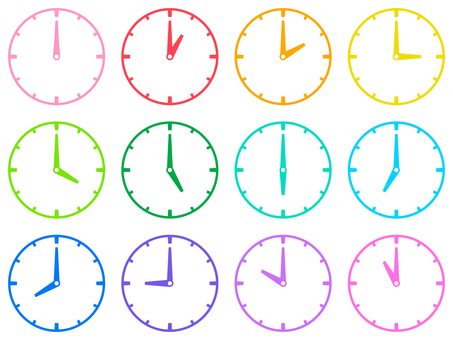

1. なんと いって いますか。 いいものを 一つ えらんでください。 Question  Answers Option 1 一時いちじ Option 2 二に時じ Option 3 七なな時じ Option 4 八はち時じ Feedback 正しいただしい！ 間違っまちがった答えこたえです! よんでみよう♪ 1 → 一時いちじ（いちじ） 2 → 二に時じ（にじ） 7 → 七なな時じ（しちじ） 8 → 八はち時じ（はちじ） 間違っまちがった答えこたえです! よんでみよう♪ 1 → 一時いちじ（いちじ） 2 → 二に時じ（にじ） 7 → 七なな時じ（しちじ） 8 → 八はち時じ（はちじ） 間違っまちがった答えこたえです! よんでみよう♪ 1 → 一時いちじ（いちじ） 2 → 二に時じ（にじ） 7 → 七なな時じ（しちじ） 8 → 八はち時じ（はちじ） Solution Correct Option (Feedback) Wrong (Feedback) Wrong (Feedback) Wrong (Feedback)
2. なんと いって いますか。 いいものを 一つ えらんでください。 Question Answers Option 1 三さん日にち Option 2 四よん日にち Option 3 六ろく日にち Option 4 八はち日にち Feedback 間違っまちがった答えこたえです! よんでみよう♪ ３さん → 三さん日にち（みっか） ４よん → 四よん日にち（よっか） ６ろく → 六ろく日にち（むいか） ８はち → 八はち日にち（ようか） 間違っまちがった答えこたえです! よんでみよう♪ ３さん → 三さん日にち（みっか） ４よん → 四よん日にち（よっか） ６ろく → 六ろく日にち（むいか） ８はち → 八はち日にち（ようか） 間違っまちがった答えこたえです! よんでみよう♪ ３さん → 三さん日にち（みっか） ４よん → 四よん日にち（よっか） ６ろく → 六ろく日にち（むいか） ８はち → 八はち日にち（ようか） 正しいただしい！ Solution Wrong (Feedback) Wrong (Feedback) Wrong (Feedback) Correct Option (Feedback)
3. なんと いって いますか。 Question Answers Option 1 十じゅう一いち日にち Option 2 十じゅう七なな日にち Option 3 十じゅう八はち日にち Option 4 十じゅう九きゅう日にち Feedback 間違っまちがった答えこたえです! よんでみよう♪ 11 → 十じゅう一いち日にち（じゅういちにち） 17 → 十じゅう七なな日にち（じゅうしちにち） 18 → 十じゅう八はち日にち（じゅうはちにち） 19 → 十じゅう九きゅう日にち（じゅうくにち） 正しいただしい！ 間違っまちがった答えこたえです! よんでみよう♪ 11 → 十じゅう一いち日にち（じゅういちにち） 17 → 十じゅう七なな日にち（じゅうしちにち） 18 → 十じゅう八はち日にち（じゅうはちにち） 19 → 十じゅう九きゅう日にち（じゅうくにち） 間違っまちがった答えこたえです! よんでみよう♪ 11 → 十じゅう一いち日にち（じゅういちにち） 17 → 十じゅう七なな日にち（じゅうしちにち） 18 → 十じゅう八はち日にち（じゅうはちにち） 19 → 十じゅう九きゅう日にち（じゅうくにち） Solution Wrong (Feedback) Correct Option (Feedback) Wrong (Feedback) Wrong (Feedback)